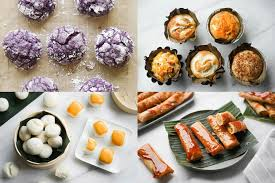

| SECTION: FILIPINO | ABOUT |
|---|
|  | FILIPINO DESSERTS | Filipinos love the use of mango, ube, and condensed milk in their desserts. As well as the use of sticky rice! Did you know?: The word dessert comes from the French verb desservir, meaning 'to clear the table' | - |

|
FILIPINO "ULAM" | Filipino delicacies, and traditional filipino "ulam". These are dishes that are what Filipinos may call their pride! Did you know?: many filipino dishes are actually inherit from Spanish culture. |